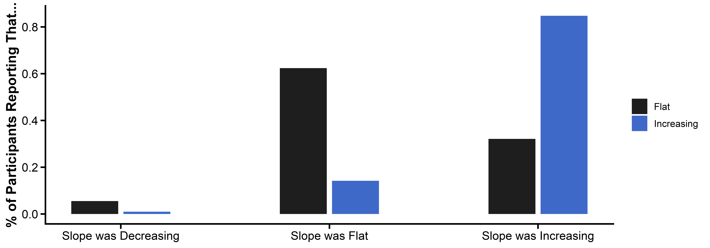

Participants were asked to report the extent to which they used a positive testing strategy (seeking confirming evidence) and a negative testing strategy (seeking disconfirming evidence) in the first half (Rounds 1–10) and second half (Rounds 11–20) of the game.
The left panels (Rounds 1–10) show that participants rarely used a Negative Test strategy (top panel) and instead favored a Positive Test strategy (bottom panel).
The right panels (Rounds 11–20) confirm the effectiveness of our testing prompt: Participants in the “Negative Test” condition substantially increased their use of a Negative Test strategy (top right panel) and decreased their use of a Positive Test strategy (bottom right panel). In contrast, participants in the “Positive Test” condition further increased their use of a Positive Test strategy while maintaining a low use of a Negative Test strategy.
8.3 Further Evidence of Change in Testing Strategies
A multinomial logit model (estimated on the choices made in Rounds 15–20, after the testing prompt was presented) provides further evidence that the prompt changed participants’ testing strategies.
For participants in the “Control” and “Positive Test” conditions, the Number of Customers and Market Valuation are significant predictors of a project being chosen, and the Number of Competitors is a negative predictor. For participants in the “Negative Test” condition, the pattern reverses: these participants shift their selections toward attributes they had previously ignored, consistent with the adoption of a negative testing strategy.
8.4 Belief Regarding the Slope
Finally, participants were asked to identify the slope condition they were assigned to.
Show Code
survey_data |>group_by(condition) %>%count(Slope) %>%mutate(pct = n /sum(n)) %>%ggplot(aes(x = Slope, y = pct, fill = condition)) +geom_col(position =position_dodge2(), width = .5) +scale_fill_manual(values =c("#1f1e1e", "#3f69c9")) +scale_x_continuous(breaks =c(-1, 0, 1),labels =c("Slope was Decreasing", "Slope was Flat", "Slope was Increasing") ) +theme_matplotlib() +labs(x =element_blank(),y ="% of Participants Reporting That...",fill =element_blank() )

Most participants correctly identified their assigned condition: They realized that the “Increasing” condition had an increasing exogenous slope, and that the “Flat” condition had no slope.
8.5 Slope Beliefs by Prompt Type (Increasing Condition)
Among participants in the “Increasing” condition, we further examine whether slope beliefs differed by prompt type.